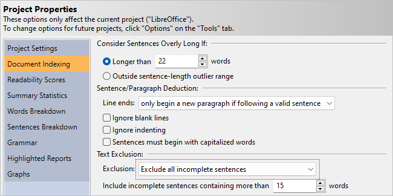

21 Analysis Notes
21.1 How Text is Excluded
Most experts recommend ignoring items such as chapter titles, list items, and table of contents when calculating reading levels. One reason that these items should be ignored is because they falsely lower the average sentence length (ASL). For example, chapter titles are usually just a couple of words. If you treat every section and chapter title as a regular sentence, then these short “sentences” will dramatically lower the ASL. In turn, this will falsely lower most of your test scores. The other reason to ignore these items is because they are not usually part of the main content, but rather dividers or sectional markers. These items are read, but it is the narrative content that readers may struggle with. Therefore, it is the content that should be our main focus, and titles and list items should just be considered “noise.”
These items, by default, are ignored for all newly created projects. That is, any word inside an incomplete sentence is not factored into any of the statistics or tests. Incomplete sentences are not factored into the overall sentence and paragraph counts, which in turn will prevent them from skewing the readability scores.
To toggle this behavior for an existing project, click the Properties button the Home tab to display the Project Properties dialog. Next, click the Document Indexing icon. Here you can select either Do not exclude any text, Exclude all incomplete sentences, or Exclude all incomplete sentences, except headings, as illustrated below.

If you are excluding incomplete sentences, note that any non-terminated sentence longer than 15 words will still be counted as a regular sentence. If a sentence is longer than a certain length and is missing its terminating punctuation, then the missing period is likely just a mistake. To accommodate for these errors, the program will consider these sentences valid. To customize this behavior, enter a different minimum sentence length in the Include incomplete sentences containing more than [15] words option (pictured above).
Note that these options are also available on the Options dialog (on the Tools tab) to change this behavior for all future projects.
Although ignoring these items is generally recommended, there is one exception: non-narrative (i.e., structured) forms. Files such as résumés and application forms often contain many terse and incomplete sentences and very little narrative text. In these situations, you should include incomplete sentences and use tests that do not emphasize sentence length, such as FORCAST. When creating a new project, there are two ways to implicitly set these options. The first way is to select non-narrative, fragmented text when specifying the document structure. The other way is to select non-narrative form when specifying the document type. By selecting either of these, the program will use the appropriate options and tests for these types of files.
Additional Items
Although not traditionally mentioned in readability articles, other items may also be excluded within Readability Studio. These include:
- copyright notices
- trailing citations
- internet and file addresses
- specific words or phrases
Refer to Section 9.3 for a detailed explanation of these options.
21.2 How Sentences are Counted
Readability Studio considers periods, question marks, exclamation points, and interabangs (!?) as the end of a sentence, although there are a few exceptions.
The first exception is periods that are part of an abbreviation, acronym, or initial. For example, the following is seen as only one sentence:
Jane B. Doe has worked at A.C.M.E., inc. for seven years.
Another exception is the last sentence inside of a quote. If this sentence is followed by a lowercase word, then it will not end until the next sentence terminating punctuation is encountered. For example, the following is seen as two sentences:
“Where did it go? I can’t find it anywhere!” he said.
Because he is lowercase, the ! will not be considered the end of the sentence and he said will be part of the preceding sentence. However, if He is capitalized, then the ! will be seen as the end of a sentence and the above will be counted as three sentences.
There is also a special rule for ellipses. If ellipses are followed by a capitalized word, then it will be considered the end of the sentence. Otherwise, it is simply seen as punctuation and does not terminate the sentence. The ellipses symbol (…) and dot sequences (...) are both recognized.
One last special case is when a colon or semicolon is found at the end of a line. In the case of a colon, it will be seen as the end of a sentence because it is assumed that this sentence is leading into a list. For a semicolon, it will be seen as the end of a lengthy list item that should be considered a valid sentence. If a colon or semicolon is found in the middle of a sentence, then it will not end that sentence.
If Aggressively exclude is enabled, then semicolons will never mark the end of a sentence. This is useful for when your document contains programmer code that you wish to exclude.
By default, lowercase words can be considered the start of a new sentence (with the exception mentioned above). Although it is poor grammar to not capitalize the first word of a sentence, this writing style is often found in some literature. This behavior can be toggled using the option Sentences must begin with capitalized words.
Finally, East Asian sentence-ending punctuation is always treated as the end of a sentence. This includes the ideographic full stop (。), its half-width variant (｡), the full-width question mark (？), and exclamation mark (！). Unlike Western periods, these characters do not require special handling for abbreviations or spacing because East Asian languages do not use them in those contexts.
21.3 Line (Sentence) Chaining
Line chaining (or sentence chaining) is a sentence deduction method where lines of text are joined until a ., ?, or ! is found. In other words, multiple lines of text can be joined into a single sentence. This is normally preferred behavior when text is formatted to a specific width, such as the following:
WARNING:
Before cleaning the blade (or performing
any general maintenance), be sure to turn
OFF the mower. Failure to comply may
result in injury.
Although this is five lines of text, we would expect this to be seen as three sentences. By chaining lines 2, 3, and part of 4 into one sentence (from Before to mower.), we properly see the sentences (regardless of the line breaks).
However, this can be a problem if your document contains headers, footers, and list items. Consider this example:
COCOA CAKE
The following ingredients are required:
- 1/2 a cup of butter
- 3/4 a cup of milk
- 1 cup of sugar
- 6 level tablespoonfuls of Baker’s Cocoa
- 3 eggs
- 2 level teaspoonfuls of baking powder
- 1 teaspoonful of vanilla
- 1–1/2 or 2 cups of sifted pastry flour
Cream the butter, stir in the sugar gradually, add the unbeaten eggs, and beat all together until very creamy.
In this situation, the header would be joined with the first sentence. Additionally, all the list items would be combined into one large sentence, and could even be joined with the sentence following them. This can greatly skew your sentence lengths and lead to erroneous results.
Readability Studio uses a more intelligent form of line chaining when deducing sentences. By default, the program will only chain lines together if all the following criteria are met:
- A line is not terminated by a ., ?, !, or :
- There are no blank lines following the line
- The next line of text is not tabbed over or bulleted
In the above example, the program will detect the blank line between the header and the first sentence and not chain them together. Instead, the header will be seen as an incomplete sentence. The program will also detect how the list items are tabbed over and not chain them together. Instead, each list item will be seen as an incomplete sentence. Any line that begins with a tab or two (or more) spaces will be considered as a tabbed line. Lines that begin with hyphens, dashes, or numbers followed by a period will be considered bulleted and will also not be chained to the proceeding sentence.
As we can see, the program helps avoid incorrect line chaining. Just as important, it will chain lines correctly when it is actually necessary. Consider the following:
WARNING:
Before cleaning the blade (or performing
any general maintenance), be sure to turn
OFF the mower. Failure to comply may
result in injury.
The first line, WARNING:, will be seen as a single sentence because the line ends with a colon. Although colons are not normally treated as a sentence terminating character, an exception is made when it is encountered at the end of a line. The next line, Before cleaning the blade (or performing, does not end with a sentence terminating character. There are no empty lines after this line, and the next line is not bulleted or tabbed; therefore, this line will be chained to the next line. This chaining will continue until an empty line or a sentence terminating character is encountered. In this case, all these lines will be joined into one sentence:
Before cleaning the blade (or performing
any general maintenance), be sure to turn
OFF the mower.
Note that even if a header does not precede an empty line or end with a sentence terminating character, line chaining will be intelligently avoided if the following sentence is tabbed or spaced over. The first sentence of a new paragraph is normally spaced over, so this is expected behavior. In this example, the following sentence is tabbed over and the program will know not to chain these lines:
WARNING
Before cleaning the blade…
A caveat with line chaining is when a header is not terminated and not followed by an empty line, and the following sentence is not tabbed over. For example:
WARNING
Before cleaning the blade…
In this case, these two lines will be erroneously joined into one sentence. To completely disable all possible line chaining, select the option Line ends always begin a new paragraph. Note that this option is only recommended if all line endings in your document represent new paragraphs. If your document contains line ends to control the width of the text, then selecting this option will cause incorrect sentence deduction.
21.4 Controlling How Sentences are Deduced
How sentences are structured can vary from document to document. Because of this, Readability Studio offers options to control how sentences are parsed and analyzed. These features are available under the Sentence deduction section of the Document Indexing page. To view these features, select Options from the Tools tab and then click on the Document Indexing icon. Under the Sentence deduction section, there are two options: Ignore blank lines when determining the end of a sentence and Sentences must begin with capitalized words.
The option Sentences must begin with capitalized words controls whether sentences must begin with capitalized words. Selecting this option will make Readability Studio more grammatically strict when counting sentences; however, it is recommended to leave this option unselected for “loosely written” documents.
The option Ignore blank lines is used for controlling how multi-line sentences with blank lines between them are seen. For example:
Chapter 1
It was the best days of our lives.
If Ignore blank lines is unselected (the default), then the above example is seen as two sentences. Chapter 1 is seen as an incomplete sentence because there is a blank line between it and the next sentence. Then It was the best days of our lives. is seen as the second sentence. This behavior is recommended for most documents because it helps remove headers and list items from the analysis.
There are special situations where you would need multi-line sentence fragments to be chained together. For example, picture books that wrap sentences around images may cause sentences to be split into fragments with blank lines between them. Refer to Section 16.2 for an example.
21.5 How Syllables are Counted
Most software that counts syllables employs one of two methods. The first is a dictionary-based system that includes a list of common words and their respective syllable counts. As the software counts a document’s syllables, each word is looked up in a dictionary to retrieve its syllable count. The disadvantage of this method is that if a word is not found, then the program must prompt you to enter the syllable count.
The second syllable-counting method is to use an algorithm. These algorithms generally consist of counting vowel blocks1 in a word to determine the syllable count. The advantage of this is that it will work with any word, without user interaction. The disadvantage is that these algorithms are traditionally less accurate than a dictionary approach. To be truly effective, these algorithms must consider special cases, such as:
- Situations where vowel blocks split into two syllables. For example, the ui in fruit is one syllable, but in intuitive it splits into two syllables.
- Situations where special consonant blocks may split into two syllables. For example, in the name McCoy, the prefix is really a separate syllable.
Readability Studio uses an algorithmic approach which takes these linguistic nuances into account.
Different algorithms should be used for different languages. The rules for vowel-blocks, silent e’s, and number counting can greatly vary between languages. For example, 85 would be two syllables in English (eight five), whereas in Spanish2 it would be four syllables (o-cho cin-co). To account for this, Readability Studio uses the proper syllabizer based on the language that you specify for your project.
Finally, for readability analysis, syllables should be counted on a word-by-word basis and not use synalepha. Synalepha is the blending of word sounds together often found in poetry. Thus, it is generally not suggested to analyze text which has a poetic meter.
How Numbers are Syllabized
Numbers are generally syllabized using one of two approaches:
- Sound out each digit of the number. For example, 87 would be three syllables (eight se-ven).
- Count the entire number as one syllable.
By default, Readability Studio counts numbers as monosyllabic words; however, this behavior can be toggled from the Document Indexing options. Note that some tests may override these settings if they require a specific method. For example, Fry will always sound out each numeric digit when syllabizing.
How Symbols are Syllabized
The following symbols are syllabized as follows:
# = 1 syllable (“pound”)
£ = 1 syllable (“pound” or “quid”) if at the beginning of the word
± = 3 syllables (“plus mi-nus”) if at the beginning of the word
$ = 2 syllables (“do-llar”) if at the beginning of the word
€ = 2 syllables (“eu-ro”) if at the beginning of the word
¢ = 1 syllable (“cent”) if at the end of the word
% = 2 syllables (“per-cent”) if at the end of the word
° = 2 syllables (“de-grees”) if at the end of the word
¼ = 2 syllables (“one fourth”) if at the end of the word
½ = 2 syllables (“one half”) if at the end of the word
¾ = 2 syllables (“three fourths”) if at the end of the word
21.6 Repeated Word Exceptions
Generally, repeated words are a typo; however, there are a few exceptions. For example:
The report is due tomorrow. I’m concerned that that report won’t be ready in time. The last time that I spoke to our boss, she said that she had had it with overdue reports.
Although awkwardly worded, the duplicate that and had are grammatically correct. To account for this, Readability Studio ignores certain repeated words, such as:
- ha ha
- had had
- no no
- that that
- die die (German article)
- der der (German article)
- das das (German article)
- sie sie (German pronoun)
Words separated by punctuation are also ignored when deducing repeated words. For example:
I need a list of new features. Each new feature, feature by feature, is required to be documented.
These will not be seen as repeated words because of the comma.
21.7 Article Mismatching
There are two special cases for article-mismatch detection: single letters and acronyms. For single letters, Readability Studio will sound out the letter when determining whether the article in front of it is correct. For example:
All the students did well, except for one that received a ‘F’.
In this example, a ‘F’ will be considered incorrect because the program will sound out the letter F as ef. An ef sound requires the article an to be grammatically correct, so this will be considered wrong.
Similar logic is applied to acronyms that probably would have each letter sounded out. This deduction is made if an acronym contains no vowels. For example:
A SDLC meeting should be held after the product is launched.
The program will sound out the letters in SDLC because it has no vowels, resulting in es dee el see. Because of the es sound, the article an is required. Therefore, the program will mark this as an article mismatch.
Note that if an acronym contains a vowel, then the program will assume that it is pronounced as a regular word. For example:
Run a FORCAST test if your document doesn’t have a regular sentence structure.
Rather than treating the word FORCAST as if it begins with an ef sound, it sounds it out like forecast. Therefore, the article a is considered correct.
21.8 Non-narrative/Fragmented Text
Most readability formulas are designed for narrative text, where a work consists of flowing sentences and paragraphs. For these formulas, the average sentence length (ASL) is an important factor.
Items such as headers and list items can adversely affect the accuracy of the ASL. If they are chained to the following sentence, then they will inflate the ASL. If they are treated as full sentences, then they will falsely lower the ASL. Because of this, most experts recommend removing these and only analyzing the narrative sections of a document.
By default, Readability Studio follows this advice. However, there are situations where this rule does not apply.
For files consisting mostly of short blocks of text (e.g., quizzes, flyers, or menus) instead of flowing narrative, this presents a problem. Sentence lengths will be abnormally short and skew most test results. Also, if incomplete sentences are being excluded, then most of the document will not even be analyzed.
To avoid these issues, it is recommended to include incomplete sentences in the analysis and to only use the FORCAST test. When creating a new project, there are two ways to implicitly set these options. The first way is to select non-narrative, fragmented text when specifying the document structure. The other way is to select non-narrative form when specifying the document type.
21.9 Joining Hyphenated Words
Some published documents format each line of text to a specific width to fit on the page. In doing so, longer words at the end of some lines may be split and hyphenated. For example:
COBOL is an acronym for COmmon Bus-
iness Oriented Language. It is commonly
used for calculating monetary transactions
and generating reports. For example, COBOL
can be found in the backend of many Point-of-
Sale systems.
Note how Business and Point-of-Sale are split across multiple lines.
When Readability Studio encounters a hyphenated word at the end of a line, it will perform these steps:
- Both parts of the word will be joined.
- The hyphen(s) will be removed and if what remains is a known word, then that will be used. Otherwise,…
- The hyphen(s) will be kept as part of the word.
With the above example, Bus-iness will be recognized as Business. In contrast, Point-of-Sale will remain as a hyphenated compound word because PointofSale is not a known word.
21.10 Special Characters
When a % is preceded by a space, the program will check if the character before the space is a number. If it is, then the % will be joined with the preceding word; otherwise, it will be treated as the start of a new word. Consider the following:
What % of viewers enjoyed the film Prometheus?
From my independent survey, over 95 % of respondents said that they did.
In the above example, the first % will be counted as a word. The second one will be combined to create the word 95 %.
21.11 Typographical Ligatures
Ligatures are glyphs that combine two (or more) letters. For example, æ is a combination of the letters a and e. Some ligatures represent unique characters that are part of languages (e.g., œ in French). Other times, they are stylistic substitutions used to improve typography. An example of this is fi; in some fonts, the dot of the i may overlap the hood of the f. To prevent this, a special ligature replaces any fi sequences for a more refined appearance.
In the case of typographic ligatures, Readability Studio will substitute them with their constituent characters. This allows for more accurate analyses and word searching. These substitutions include:
- f f
- f i
- f l
- f f i
- f f l
- f t
- s t
21.12 Combined Accents
Diacritical markers are accents combined with letters to produce a new letter. For example, e combined with combining acute accent (U+0301) will create an “e with acute” (é). In some files, these accented characters may be stored as two-characters sequences, rather than a single character. For example, the file will contain the sequence e + U+0301 rather than the precomposed character é. While most text editors display them identically, searching for é will fail because the file contains two distinct code points.
During import, Readability Studio will substitute these sequences with their proper characters. This will ensure accurate results and text searching. All diacritical combinations for European letters are supported, including the following accents:
- grave
- acute
- circumflex
- diaeresis/umlauts/trema
- dot above
- ring
- caron
- short solidus
- long solidus
- tilde
- retroflex hook below
- cedilla
21.13 Loanwords
Words and phrases from other languages that are commonly used in another are referred to as loanwords (or borrowed words). For example, schadenfreude, doppelgänger, and armada are often heard in the English lexicon, despite their German and Spanish origins. In the context of readability, these words are counted and syllabized just as any other native word. For example:
That first sip of Mokka Java coffee while relaxing at Winans with a good Edward Tufte book…la dolce vita.
In the above example, la dolce vita will be counted as part of the sentence and syllabized using the English syllabizer’s rules.
This also applies to dual-role characters, such as Greek letters, which are often used as mathematical symbols. In this context, analyses will treat individual Greek letters as monosyllabic words. On the other hand, contiguous Greek letters will be seen as a word and syllabized as such.
Readability Studio can process most European letters (and Japanese, see below), meaning that it will count the letters of foreign words as expected. (This applies to all words, not just loanwords.) In terms of syllable counting, it will use the rules defined by the project. For example, a Spanish project will use the Spanish syllabizer for all words.
As an example:
“привет,” Ivan said to his trusty localization engineer.
In an English project, привет will be counted as two syllables. Despite being a Russian word, Readability Studio will recognize the vowels и and е in it. From there, the English syllable-counting algorithm will calculate this as being two syllables.
In regards to Japanese script, Readability Studio supports modern Japanese orthography (as defined in the Unicode Basic Multilingual Plane [BMP]). This includes:
- Hiragana
- Katakana (including the half-width and phonetic extensions for Ainu)
- Jōyō/Jinmeiyō Kanji
When a Japanese word is encountered, each character is counted as one syllable, except for small kana (e.g., ュ, ョ, ッ). (Small kana modifies the preceding character and are not counted as separate syllables.) For example:
Check the option “ドキュメンテーション” to install the documentation.
Here, ドキュメンテーション will be counted as an eight-syllable word (the ュ and ョ will not count as syllables).
Note on word separation: this feature is intended for individual Japanese words appearing within other languages. Because Japanese does not use spaces between words, larger blocks of Japanese text will be treated as a single “word” with an extremely high syllable count. If your documents contain sections of Japanese, it is recommended to exclude them using the Exclude text between feature.
21.14 Link Lists (HTML Importer)
When importing HTML documents, three or more consecutive hyperlinks not separated by text will be treated as a link list. This will involve laying out each link on a separate line, with all of them tabbed over. This will prevent what would usually be a footer containing links from being seen as a sentence. For example:
Our Products
Readability Studio
Our Corporate Mission
Inspire through software | Align clients’ global strategies | Make the world a better place | Elevate world consciousness
Because there isn’t any text in between the links at the bottom (only | separating them), it is assumed that each link is a separate unit and not part of a sentence. When the document is imported, it will be processed as such:
Our Products
Readability Studio
Our Corporate Mission
Inspire through software |
Align clients’ global strategies |
Make the world a better place |
Elevate world consciousness
Note that the link list must also start from a new line. In other words, consecutive links that are proceeded by content on the same line will remain part of the text. For example:
The recommended tools for continuous integration are: ccp-check, Microsoft PREFast, clang-tidy, GCC.
This content will be imported as it is shown above (i.e., a full sentence).
21.15 Option Changes that Require Reanalysis
When changing the options of a project (either from the ribbon or Project Properties dialog), most changes can be applied without the program needing to analyze the document again. For example, changing graph options or adding a test will process immediately, without the program needing to refresh the rest of the results. This is helpful when working with large documents or batch projects that may take some time to process.
There are some options that when changed will require a project to reload. These are listed below:
- Any changes made from the Document tab of the ribbon. This includes all options related to document analysis, spell checking, and editing the source document(s) (if documents or text are embedded in the project).
- Adding a Dolch section.
- Adding a custom test.
When any of the aforementioned changes are made, the project will reanalyze the source document(s) and recalculate all its results.
Note that you can always reload a project manually by clicking the Reload button on the Home tab of the ribbon. This is useful when you are editing the source document from another program and want to refresh the results in Readability Studio.